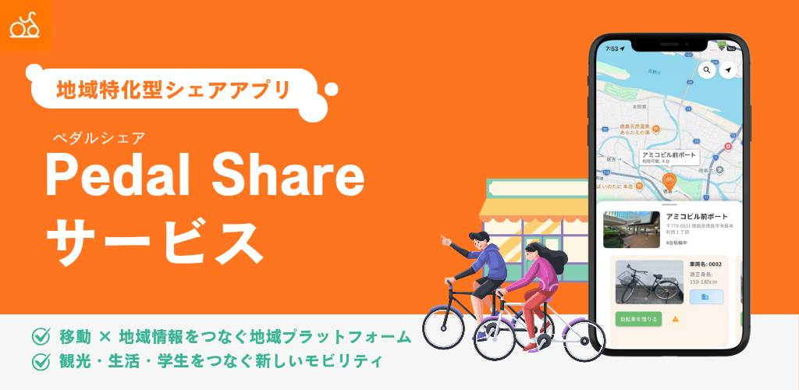

ビジネスは決まっているのに、ITに落とし込めない
何を売るか・誰に届けるかは描けているのに、サイトやEC、システムの形にする言葉が出てこない、という相談をよく受けます。専門用語に頼らず、要件を整理し、設計から実装まで一貫して引き受けます。
Our Purpose
設計から実装、運用まで。
技術責任を引き受ける開発パートナーです。
ITの専門知識がなくても構いません。売り方・届け方のイメージが決まっている方に、ECサイトやコーポレートサイト（HP）の制作から、AIやアプリ・基盤まで、言葉を噛み砕きながら伴走します。
VALIARK合同会社｜大阪大学基礎工学部情報科学科発｜大阪府吹田市
Solve the problem
何を売るか・誰に届けるかは描けているのに、サイトやEC、システムの形にする言葉が出てこない、という相談をよく受けます。専門用語に頼らず、要件を整理し、設計から実装まで一貫して引き受けます。
公開後の更新や決済・在庫、問い合わせの流れまで含め、運用を前提に構成します。AIや連携機能が必要な場合も、デモ止まりにせず実利用を見据えて設計します。
社内に詳しい人がいないまま業者選びだけが進むと、後から齟齬が出やすくなります。少数精鋭で伴走し、経営の意図と技術の選択をつなぎ、必要ならCTO的な役割も担います。
Three Services
ECサイト・コーポレートサイト（HP）の企画から制作・運用の見通しまで。加えて、AI基盤、モバイル・IoT・SNSなどのサービス基盤、CTO的な技術責任まで。業務委託・共同開発の形で提供しています。
Achievements
契約・守秘の範囲内で公開しています。詳細はお問い合わせください。

地域展開型モビリティ基盤
基盤設計による地域モビリティの実装。

SNS × AI モバイルプロダクト
AIを体験に統合。

CTO参画
技術責任の引受。

教育AI共同開発
教育×AIの実装。
Company
2025年10月設立。大阪大学基礎工学部情報科学科に在籍する共同代表2名が、業務委託・共同開発のもとで開発組織として活動しています。沿革・代表・法人概要は「私たちについて」をご覧ください。
Clients
守秘・許諾の範囲で順次掲載します。非公開案件も含め、詳細はお問い合わせください。
Contact
EC・HPの制作からAI・基盤まで。ITに不慣れでも構想段階からご相談ください。内容を確認のうえ、通常2営業日以内にご返信します。